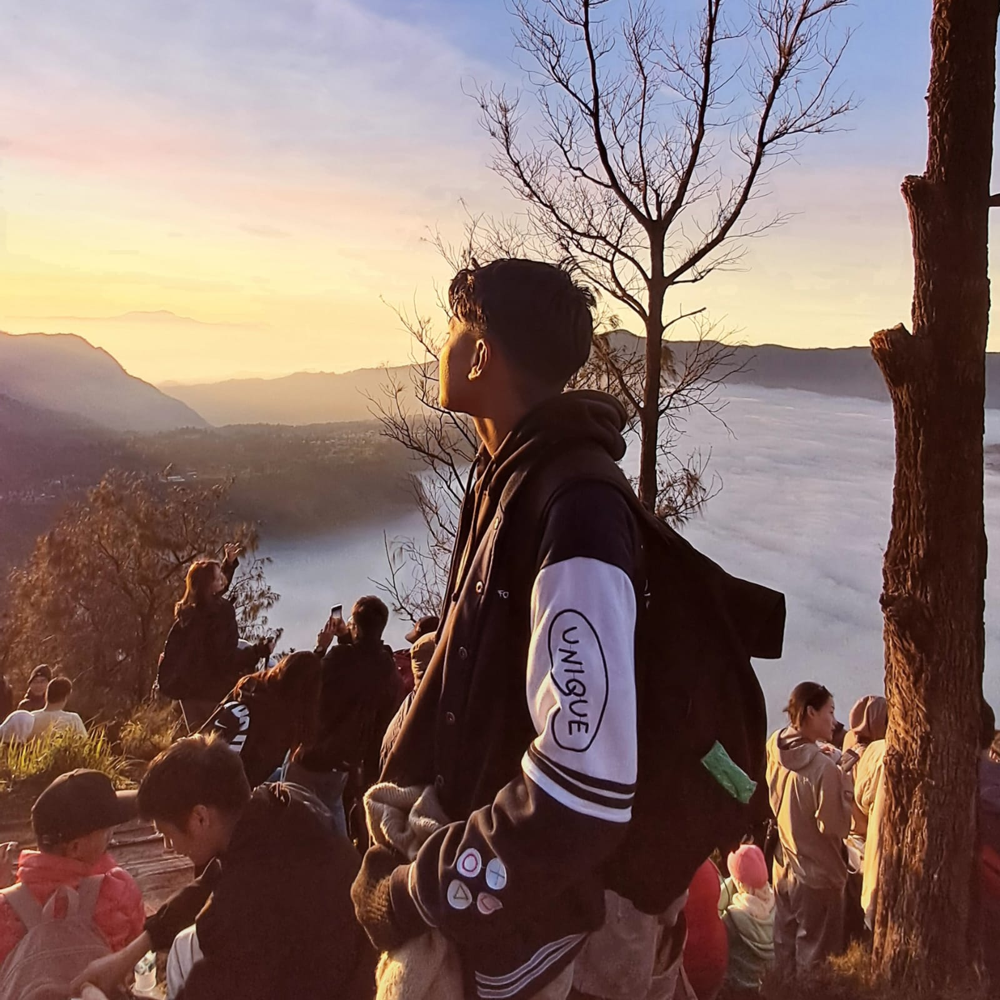

Teacher Competency Development Project
Production assistant, camera operator, editor
Shot and edited documentary videos at the Bank Indonesia Museum and Ragunan Zoo for a teacher training programme.

The person behind this fan page
Information Systems student, UPN "Veteran" Jakarta
Most people call me Faiz. I was born in Jakarta and I study at the Faculty of Computer Science, UPN "Veteran" Jakarta. I'm interested in technology, programming and building systems, and I like trying new things.
Get in touchMostly for their music, and above all their vocals. I first heard EXO as a kid, right around the time they debuted. My big brother was the one who showed them to me, and I have been listening ever since.
I love sports, especially football, futsal, badminton and basketball. In high school I also spent a lot of time behind the camera, shooting and editing videos for school projects.
| Period | School | Programme |
|---|---|---|
| 2025 – now | Universitas Pembangunan Nasional "Veteran" Jakarta | Bachelor of Information Systems |
| 2022 – 2025 | SMA Negeri 17 Kota Bekasi | Science (STEM, Engineering) |
Production assistant, camera operator, editor
Shot and edited documentary videos at the Bank Indonesia Museum and Ragunan Zoo for a teacher training programme.
Concept, lead camera operator
. Wrote the concept, shot the film and handled the production equipment.
Concept, quality control
. Designed a classroom makeover inside and out, inspired by Acehnese traditions.
Quality control, documentation
. Ran a waste sorting programme across several school buildings and turned waste into useful products.
Concept, cast member
. Helped shape the project concept and acted in the drama.
Player
. Trained regularly and played in several tournaments with the school team.